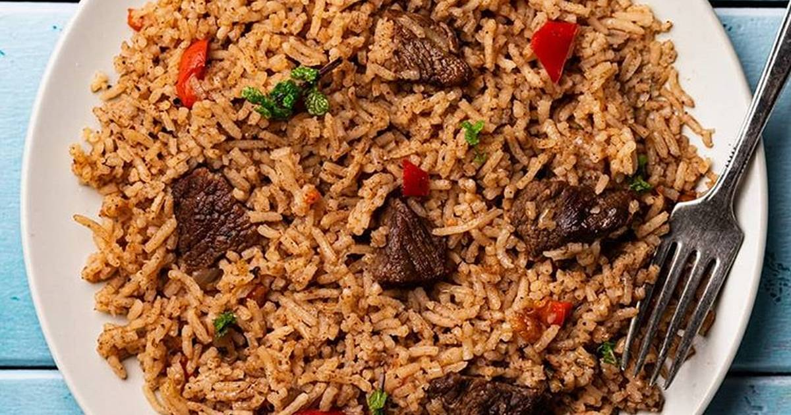

Pilau

Swahili beef pilau
Pilau is a specialty along the Swahili Coast in which Rice is flavored with spices and cooked in a well seasoned broth of Meat, Poultry or Fish.
It is also a festive Dish which never misses at every special occasion
Ingredients
- 2 medium size onions
- Rice
- Beef
- 5 cloves of Garlic, crushed
- 1 fresh Ginger, crushed
- 2-3 teaspoon Pilau spices
Instructions
- Boil beef with ginger for 10 minutes.
- Heat oil and fry onions till light brown, add garlic and Pilau spices and on a low heat, fry for 1 minute
- Add tomatoes, meat and cook till tender
- Add rice and ensure to mix everything very well before adding your broth or hot water then stir the mixture very well
- Add salt and pepper to taste then cover the pot and cook on medium heat
- When the Food is nearly dry, lower down the heat to very low, cover your Pilau with aluminium paper (please avoid newspapers or polythene papers) and place the lid on top. Leave to cook for 10 minutes .
*Here you are, your Pilau is ready!